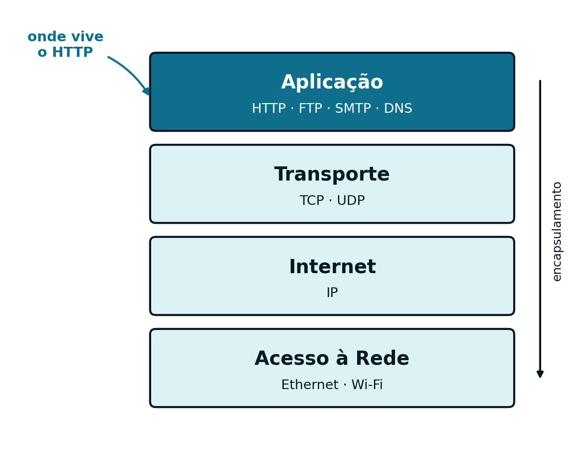
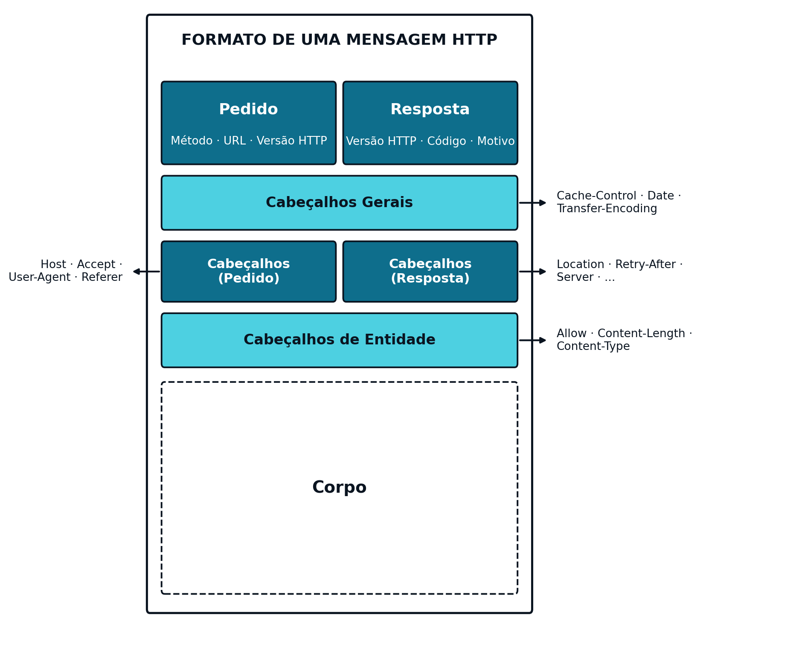
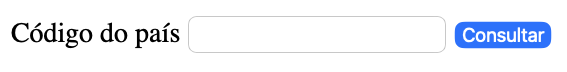

3 O Protocolo HTTP
3.1 O Middleware que Liga Frontend e Backend
O Capítulo 1 identificou três componentes em qualquer aplicação Web: Frontend, Middleware e Backend. O Capítulo 2 dedicou-se à primeira, um conjunto de páginas HTML com formulários, entre eles o de consulta de capital (capital.html) e o de autenticação (login.html). Esses formulários, por si só, não fazem nada: precisam de um protocolo que leve os dados que o utilizador preenche até um servidor, e que traga de volta uma resposta. Esse protocolo, o Middleware usado nas aplicações web é o HTTP (HyperText Transfer Protocol). Este capítulo detalha o seu funcionamento.
3.2 O Modelo TCP/IP
Antes de entrar no detalhe do HTTP propriamente dito, vale a pena recordar onde é que este protocolo encaixa na pilha de comunicações. O modelo TCP/IP organiza essa pilha em quatro camadas, cada uma responsável por um aspeto diferente da comunicação em rede:
| Camada | Responsabilidade | Exemplos de protocolos |
|---|---|---|
| Aplicação | O formato dos dados trocados entre aplicações | HTTP, FTP, SMTP, DNS |
| Transporte | Entrega dos dados entre processos, fiável (TCP) ou não (UDP) | TCP, UDP |
| Internet | Encaminhamento dos dados entre redes, por endereço IP | IP |
| Acesso à Rede | Transmissão física dos dados no meio local | Ethernet, Wi-Fi |

O HTTP é, portanto, um protocolo da camada de Aplicação: não se preocupa em saber como é que os dados chegam ao destino, apenas define o formato do pedido e da resposta. Essa entrega fica a cargo do TCP, na camada de Transporte, que garante que os dados chegam completos, sem erros e pela ordem em que foram enviados — uma garantia de que o HTTP depende, sem nunca a implementar diretamente.
3.3 O HTTP
O HTTP (HyperText Transfer Protocol) é um protocolo de texto, baseado no modelo pedido-resposta: o cliente envia um pedido, o servidor devolve uma resposta, e a ligação entre os dois não guarda memória de pedidos anteriores — cada pedido é tratado de forma independente, isto é, o HTTP não tem estado (é stateless). Esta secção detalha os três aspetos que definem um pedido e uma resposta: os métodos, o formato geral da mensagem e os códigos de estado.
3.3.1 Métodos
Cada pedido do cliente ao servidor é feito no formato HTTP e indica, através de um método, a operação que se pretende realizar sobre um determinado recurso. O “recurso” no contexto das aplicações web pode ser uma página html, uma imagem, um PDF, ou qualquer outro suscetível de ser manipulado digitalmente:
| Método | Semântica típica |
|---|---|
GET |
Obter um recurso |
POST |
Criar um recurso |
PUT |
Atualizar ou substituir um recurso |
DELETE |
Remover um recurso |
HEAD |
Obter apenas os cabeçalhos, sem corpo |
Estes cinco métodos cobrem a generalidade das operações realizadas por uma aplicação Web; os dois primeiros (GET e POST) são, de longe, os mais usados em páginas web, enquanto PUT e DELETE ganham importância sobretudo nos serviços web.
3.3.2 Formato de uma Mensagem
Quando a aplicação no computador do cliente quer comunicar com o servidor, ativa a camada de Aplicação da pilha protocolar de comunicações, a qual formata o pedido de acordo com o protocolo HTTP. Tanto um pedido como a resposta que se lhe segue apresentam uma estrutura geral de uma mensagem semelhante:
- Uma primeira linha, diferente consoante se trate de um pedido (método, URL e versão de HTTP) ou de uma resposta (versão de HTTP, código de estado e motivo)
- Um conjunto de cabeçalhos (headers), que transportam metadados sobre a mensagem (por exemplo, o anfitrião de destino, o tipo de conteúdo ou o seu comprimento)
- Um corpo (body), opcional, com os dados propriamente ditos
Um pedido GET não tem, tipicamente, corpo: todos os dados que transporta vão na própria URL, sob a forma de parâmetros. Um pedido POST transporta os dados no corpo da mensagem, fora da URL.

Exemplo: do Formulário de Consulta de Capital a um Pedido HTTP
Recorde-se o formulário de consulta de capital construído no Capítulo 2 (capital.html):
<form method="GET" action="/capital">
<label for="countrycode">Código do país</label>
<input type="text" id="countrycode" name="countrycode">
<button type="submit">Consultar</button>
</form>Este código HTMLrenderiza no browser como mostrado na figura Figura 3.3:

capital.html), tal como é apresentado no browser.
Ao ser submetido (clicando no botáo Consultar) com o valor PT no input, o browser gera a seguinte mensagem GET de pedido HTTP:
GET /capital?countrycode=PT HTTP/1.1
Host: localhost:8080
Note-se que, por se tratar de um método GET, o parâmetro countrycode é enviado como parte da URL (depois do ?), e não existe corpo na mensagem. Se o mesmo formulário usasse method="POST", o parâmetro seguiria antes no corpo do pedido, e a URL manter-se-ia limpa (/capital).
O servidor, ao processar este pedido, devolve uma resposta HTTP como a seguinte:
HTTP/1.1 200 OK
Content-Type: application/json
{"country": "Portugal", "capital": "Lisboa", "ccode": "PT"}
Exemplo: do Formulário de Autenticação a um Pedido POST com Corpo
Recorde-se agora o formulário de autenticação, também do Capítulo 2 (login.html), com os campos user e pass:
<form method="POST" action="/login">
<label for="user">Utilizador</label>
<input type="text" id="user" name="user">
<label for="pass">Palavra-passe</label>
<input type="password" id="pass" name="pass">
<button type="submit">Entrar</button>
</form>Este código HTMLrenderiza no browser como mostrado na figura Figura 3.4:

login.html), tal como é apresentado no browser.
Ao ser submetido, este formulário gera o seguinte pedido HTTP:
POST /login HTTP/1.1
Host: localhost:8080
Content-Type: application/x-www-form-urlencoded
Content-Length: 21
user=javaee&pass=esigelec2026
Ao contrário do exemplo anterior, os parâmetros já não vão na URL: seguem no corpo do pedido, depois de uma linha em branco que separa os cabeçalhos do corpo. É por isso que credenciais e outros dados sensíveis se enviam tipicamente por POST, nunca por GET: o corpo de um pedido não fica registado nos históricos de navegação nem nos ficheiros de registo (logs) do servidor, ao contrário do que acontece com os parâmetros de uma URL.
O servidor, ao validar as credenciais com sucesso, devolve uma resposta HTTP como a seguinte — neste caso, uma aplicação orientada à apresentação (ver Capítulo 1), que responde no corpo da resposta código HTML que vai renderizar no browser. Se a aplicação for orientada ao serviço no corpo da resposta viria JSON em vez de HTML:
HTTP/1.1 200 OK
Content-Type: text/html
<h1>Bem-vindo, javaee</h1>
<p>Sessão iniciada com sucesso.</p>
3.3.3 Códigos de Estado
Toda a resposta HTTP inclui um código de estado numérico, que indica sucintamente o resultado do pedido. Os códigos agrupam-se em cinco categorias, consoante a centena:
| Intervalo | Categoria |
|---|---|
1xx |
Informativo |
2xx |
Sucesso |
3xx |
Redirecionamento |
4xx |
Erro do cliente |
5xx |
Erro do servidor |
Dentro destas categorias, alguns códigos surgem com particular frequência no desenvolvimento de serviços Web:
| Código | Significado |
|---|---|
200 OK |
O pedido foi processado com sucesso |
201 Created |
Um novo recurso foi criado com sucesso |
400 Bad Request |
O pedido está malformado ou falta um parâmetro obrigatório |
403 Forbidden |
O cliente não tem permissão para aceder ao recurso |
404 Not Found |
O recurso pedido não existe |
500 Internal Server Error |
Ocorreu um erro não tratado do lado do servidor |
Escolher o código de estado correto para cada situação é uma parte essencial do desenho de um serviço Web: o código transmite, por si só, informação que o cliente pode usar para decidir como reagir, sem precisar de interpretar o corpo da resposta.